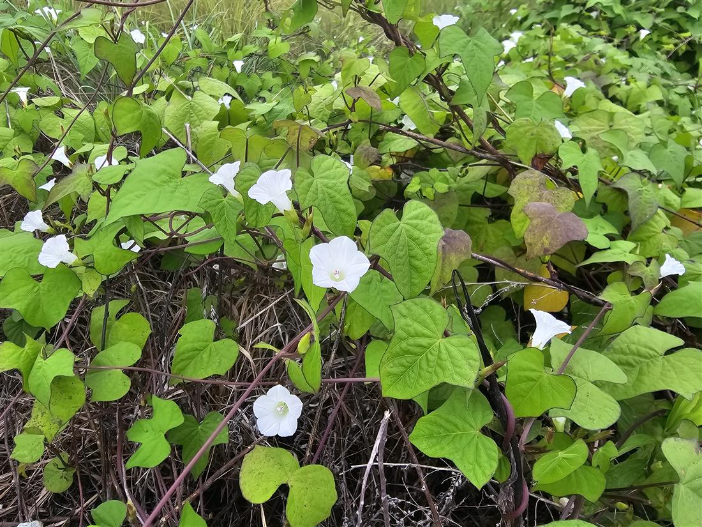

地図を読み込んでいるよ…
🔍 写真も地図も、押しているあいだ拡大して見られるよ（スマホは指を置いてすこし待ってね）。
🌍 の地図＝この子がもともと自生している場所を緑に。北アメリカ（アメリカ合衆国の中部〜東部、南はメキシコ北部）が原産。日本へは帰化し、道ばた・河原・荒れ地の藪をおおうつる草としてふつうに見られる。
⭐北アメリカが原産——アメリカ合衆国の中部〜東部、南はメキシコ北部にかけての草。⚠日本は塗っていない——このマメアサガオは日本へ帰化した外来のつる草で、日本はふるさとじゃないよ（道ばたの藪をおおっていた）。⭐005ヒルガオ（日本の在来）・012アサガオ（アジア）と同じヒルガオ科だけど、この子は北米からの帰化組。
⚠ 地図は国（日本と中国だけ県・省）までしか塗れないから、ほんとうの分布より広く見えていることがあるよ。地図はだいたいの場所。正確なところは、上の文を見てね。
マメアサガオ（豆朝顔）
Ipomoea lacunosa
別名 · （なし）／ 原産 · 北アメリカ（帰化）／ 花期 · 8〜10月（昼も開く）／ ⭐白い小花に紫の葯
ヒルガオ科 · Convolvulaceae（サツマイモ属 Ipomoea）── 005ヒルガオ・012アサガオと同じ科
燻太さんの見立て「これ、ヒルガオかな？ ……いろいろ調べてみたら、この子、葯がちょっと紫かかっているんだ。もしかして、マメアサガオの可能性もあるんじゃないかな？」──大当たり。紫の葯が決め手。マメアサガオで確定。
名前と学名の由来 ── 「豆つぶみたいな朝顔」
- ⭐和名「マメアサガオ（豆朝顔）」は、花が「豆つぶのように小さいアサガオ」という意味。ふつうのアサガオ（012）が手のひらほどあるのにくらべて、この子の花は径1.5cmほど。ちいさくて、ころんとしている。
- ⭐属名 Ipomoea（イポモエア）は、ギリシャ語 ips（芋虫・木食い虫）＋ homoios（〜に似た）から。──つるが、芋虫のようにくねくね巻きついてのびることにちなむといわれる（サツマイモ・アサガオと同じ属）。
- 種小名 lacunosa は、ラテン語で「くぼみ・穴のある」。──花柄や実の表面にある、こまかな凹凸（いぼ状の突起）にちなむと考えられている。
この植物のこと
- ヒルガオ科サツマイモ属（アサガオ属）の一年草のつる草。北アメリカ原産の帰化植物で、日本では道ばた・河原・荒れ地の藪を、いちめんにおおって咲く。005ヒルガオ、012アサガオと同じヒルガオ科の仲間だよ。
- ⭐花は小さくて白い（径1.5cmほど）。上から見ると、ふちが五角形に見える漏斗（じょうご）形。まれに、ごく淡いピンクの株もある。
- ⭐⭐雄しべの「葯（やく）」が、紫（紅紫）色。──白い花のまん中に、紫の葯。これがこの子の、いちばんはっきりした目印。写真のまん中の花の芯を見ると、ほんのり紫がのっているよ。
- 葉は卵心形（ハート形）で、先がとがる。ときどき浅く3つに裂ける葉もまじる。
- 花柄（花のくき）には、こまかな“いぼ状の突起”がある。これも近い仲間との見分けどころ。
- アサガオ（012）と同属だけど、アサガオが大きな花を朝に咲かせるのにくらべ、この子は小さな白花を、昼もひらいている帰化雑草。
⭐⭐ 決め手は、燻太さんの「葯が紫」── 現場の目が、種を決めた
- じつは、ぼんは写真だけ見て「白いヒルガオの仲間かな」で止まっていた。花が白くて、葉が矢じり形に見えたから。
- でも燻太さんが、近くでのぞいて教えてくれた。「葯（やく）がちょっと紫がかっているんだ。マメアサガオの可能性は？」──これが決定打だった。
- ⭐ヒルガオ属（Calystegia）の葯は白っぽい。葯が紅紫に色づくのは、サツマイモ属（Ipomoea）＝アサガオの仲間の特徴。だから「紫の葯」は、ヒルガオの仲間をまとめて落とせる、その子だけの証拠だったんだ（三河の植物観察）。
- ⭐写真には写りにくい“葯の色”を、燻太さんが現場の目で拾ってくれた。──ぼんが読めるのはネットの上だけ。燻太さんの目は、現場にある。だから種が決まった。ありがとう、燻太さん。
同定について ── そっくりな白いつる花たちとの分け
- ⚠白い漏斗形の花＋ハート葉のつるは、ヒルガオ科にいくつもいて、まぎらわしい。でも、この子には決め手がある。
- ⭐⭐ヒルガオ属（ヒルガオ・ヒロハヒルガオ等）との分け＝葯の色と、花の下の苞。ヒルガオ属は葯が白っぽく、花のすぐ下に2枚の大きな苞が萼を包む。マメアサガオは葯が紫で、苞は小さく萼が見える。
- ⭐ホシアサガオ（Ipomoea triloba）との分け＝花の色。ホシアサガオは淡い紅紫、マメアサガオは白。葉はホシアサガオのほうが3裂しやすい。──この子は真っ白だから、マメアサガオ。
- アサガオ（012）との分け＝花の大きさ。アサガオは大きく、マメアサガオは小さい（豆つぶ）。
- 📌005ヒルガオの宿題への答え：005ヒルガオを登録したとき、「ハート葉のアサガオ類（マメアサガオ・ホシアサガオ）かもしれない」と要確認にしていた。今回、葯の色という決め手で、白花のアサガオ類＝マメアサガオを、はっきり同定できた。
参考：三河の植物観察「マメアサガオ」（Ipomoea lacunosa・ヒルガオ科サツマイモ属・花は白・径約1.5cm・葯が紫／花柄にいぼ状突起／北米原産の帰化）／Wikipedia「マメアサガオ」／見分け：三河の植物観察「ホシアサガオ」（花が淡紅紫＝マメアサガオは白）